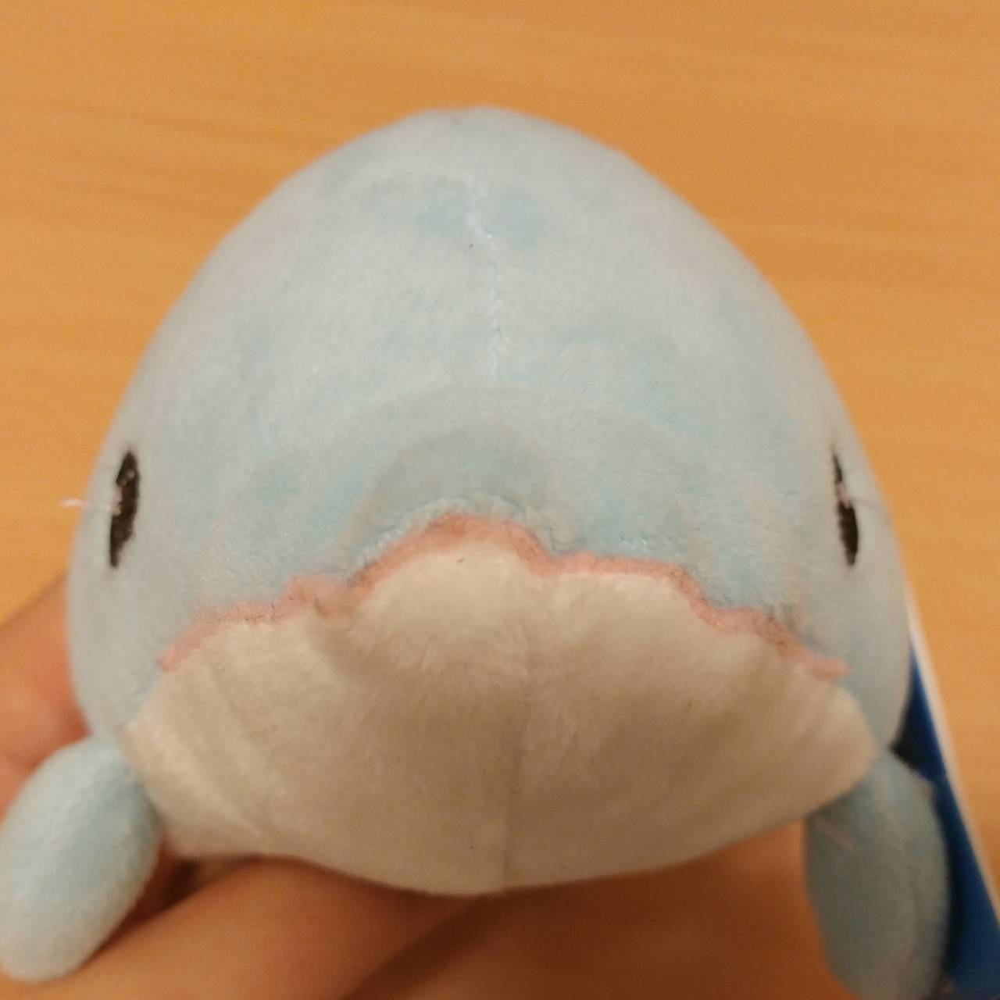

電気の逃げ道へようこそ
このサイトは管理人ことイルカがいろんなことから逃げまくってたらできてたサイトです
こんな感じで逃げまくってきたのですが、別に逃げることは悪いことじゃない！気が向いたらまた戻っていくればいい！！そんな感じで、電気からも逃げたり戻ったりを繰り返していました。このサイトでは、電気を勉強していてつまずいたところをどのようにして乗り越えたかという勉強法やイルカの観点から見た電気工学の知見を発信していきたいと思います。
↓連絡先twitter
何か質問等ございましたらtwitterのDMでお願いします！！